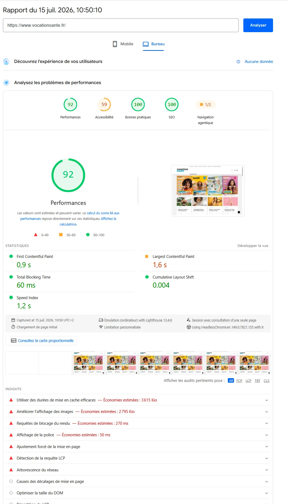
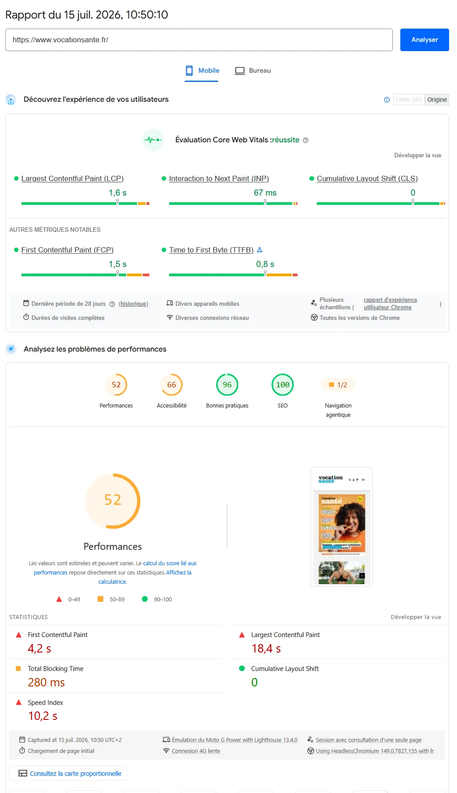
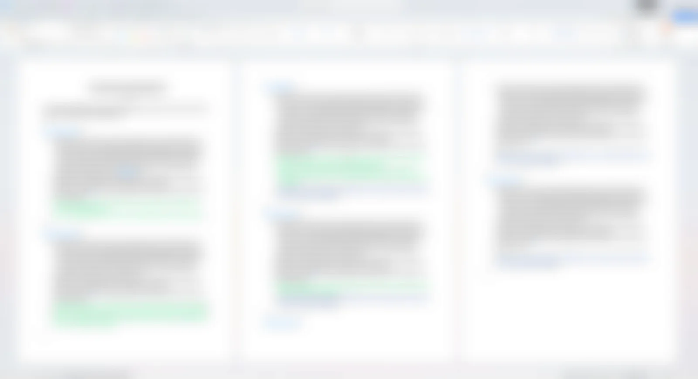

Tim Agoune
Tim Agoune01Objectif
Analyser les sites internet de l'entreprise afin de relever des pistes d'amélioration : liens cassés, emplacement des boutons d'action (CTA), clarté des informations, contenus à mettre à jour. Cet audit m'a aussi permis de me familiariser avec les différents sites du groupe et de mieux comprendre les enjeux de chacun.
02Démarche
J'ai procédé de manière méthodique, en commençant par les sites qui génèrent le plus de trafic. Mon audit reposait sur quatre axes : la fluidité de la navigation, la clarté des informations, la cohérence de l'emplacement des CTA et le bon fonctionnement des boutons et des liens. J'ai pris mes notes sur un cahier, site par site, puis je les ai reportées dans un document Word partagé avec mon tuteur et ma responsable de département. J'ai ensuite classé les améliorations relevées par priorité, en commençant par les actions rapides (mise à jour des logos, fiches auteurs) avant les projets plus lourds (newsletter, refonte du site).


J'ai complété ce travail par un audit des performances avec Google PageSpeed : vitesse de chargement, accessibilité, bonnes pratiques et SEO. Ces audits m'ont permis de dégager les missions sur lesquelles j'ai ensuite travaillé, comme l'amélioration du tunnel de conversion, le tracking ou la refonte des sites.
La démarche a été étendue à tous les sites des revues du groupe (Neurologies, Repères en Gériatrie, Onko+, Rhumatos, La Revue Pharma…). Pour chaque site, j'ai noté mes remarques dans un cahier organisé par thèmes (site internet, SEO, réseaux sociaux, gestion de projet), puis je les ai regroupées dans une liste de pistes d'améliorations partagée avec l'équipe.

03Moyens et outils
- PageSpeed Insights pour l'état technique (performance, Core Web Vitals, accessibilité) ;
- Google Analytics 4 pour l'audience, l'engagement et la répartition par canal ;
- WordPress + Yoast SEO pour l'état de l'optimisation on-page, article par article ;
- une analyse manuelle de la navigation et du maillage interne.